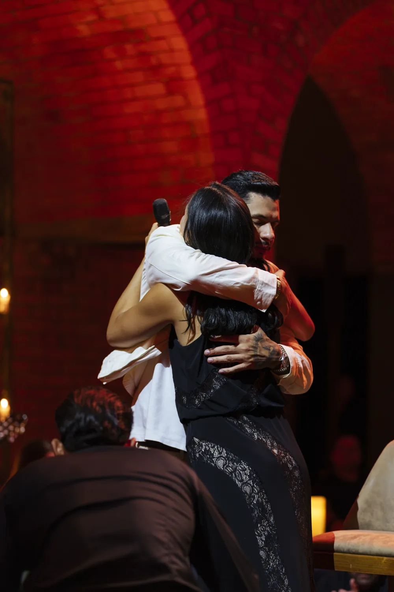
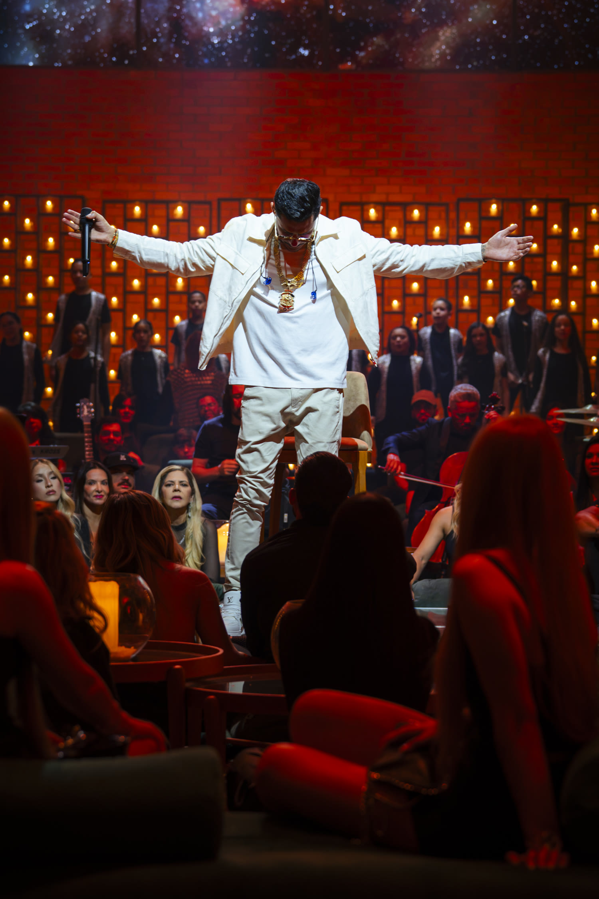
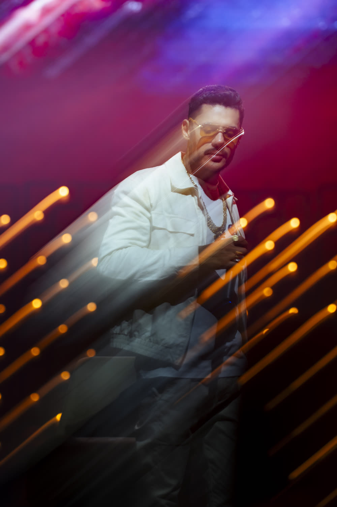
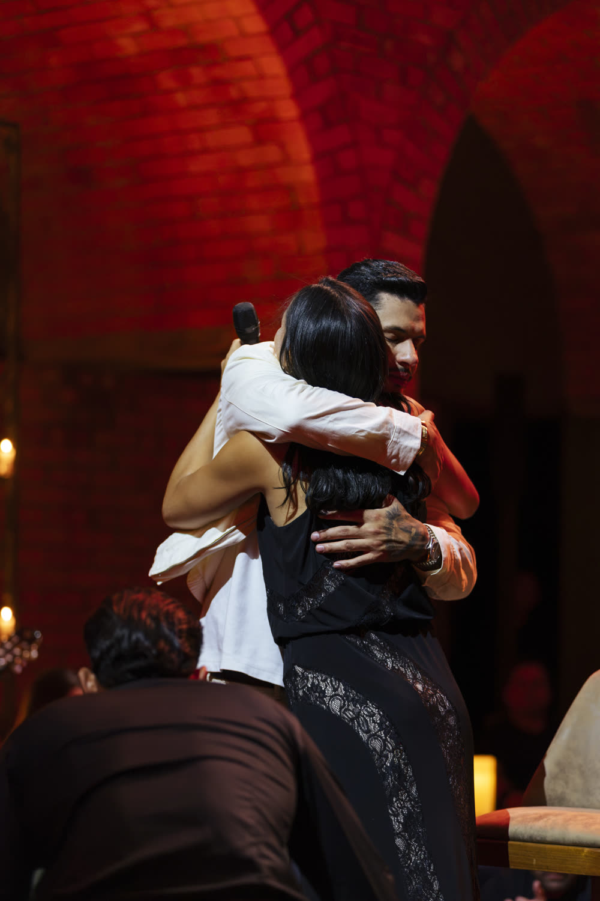
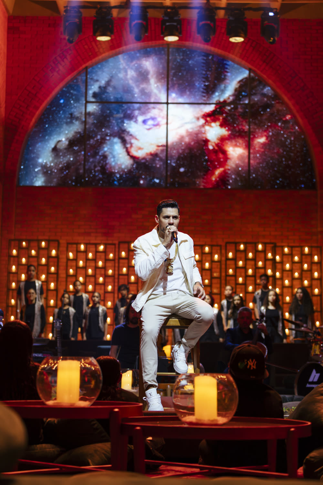
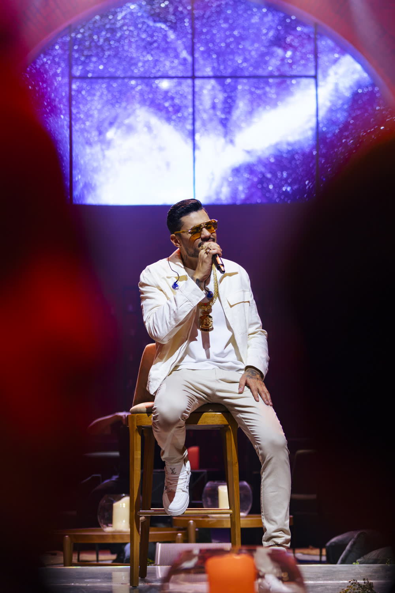
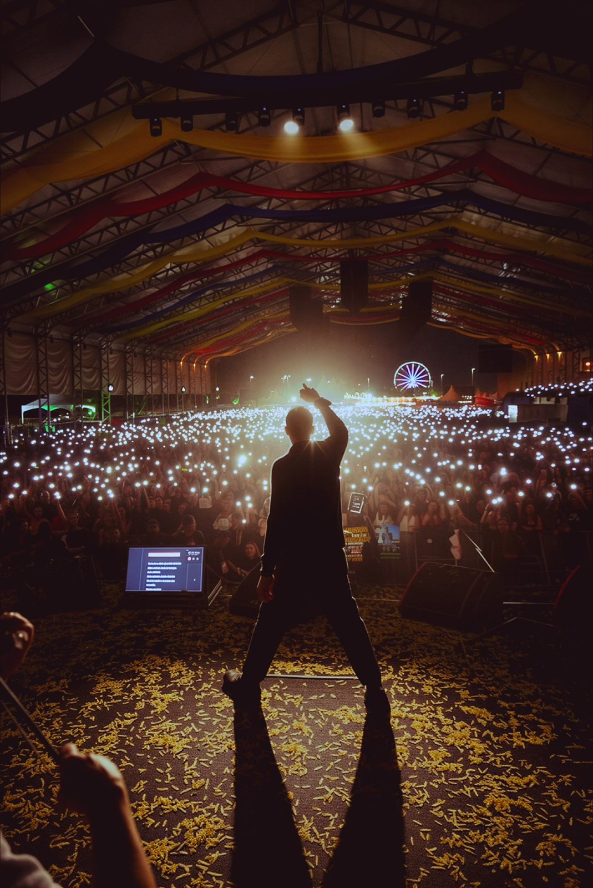

01 — Música
Ouça agora
Do último single ao catálogo completo, direto do Spotify.
✦ ✦ ✦
+55©
+55©
Nunca separamos
o rap da rua do
rap que toca o mundo.
Isso é Hungria
Desde 2007©
Brasília — DF
Brasília — DF
03 — Turnê
Shows
Próximas datas.
Quer o Hungria na sua cidade? Fale com o booking.
©2026
Grande Hit
Clipe em destaque
Grande Hit

04 — Sobre
O Hungria é o som que a quebrada de Brasília construiu. Do teclado da igreja aos bilhões de plays, quinze anos de estrada forjaram uma voz que é nativa, real e cantada de cor.
Hoje esse som é exatamente o que toca no rolê, na estrada e na história de amor de um mundo inteiro — do trap romântico ao rap que gruda de primeira.
Não é só música. É a batida que virou trilha de uma geração.






 de Brasília pro mundo.
de Brasília pro mundo.
05 — Contato
Fique por dentro